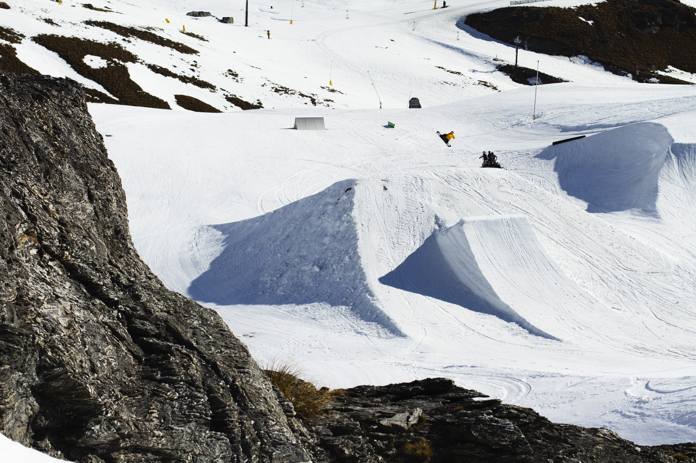

<div id="page-wrap">
  <div class="white-out" style="grid-row: 1; grid-column: 1"></div>
  <header class="white-out">
    <h1>Ben Comber</h1>
  </header>
  <div class="white-out" style="grid-row: 1; grid-column: 3"></div>
  <div class="white-out" style="grid-row: 2; grid-column: 1"></div>
  <div class="breadcrumbs white-out">Home</div>

  <div id="canvas"></div>

  <div
    class="curtain"
    data-fs-id="simple-plane-fs"
    data-vs-id="simple-plane-vs"
  >
    
  </div>

  <script id="simple-plane-vs" type="x-shader/x-vertex">
    #ifdef GL_ES
    precision mediump float;
    #endif

    // default mandatory variables
    attribute vec3 aVertexPosition;
    attribute vec2 aTextureCoord;

    uniform mat4 uMVMatrix;
      uniform mat4 uPMatrix;

      // our texture matrix uniform
      uniform mat4 simplePlaneTextureMatrix;

    // custom variables
    varying vec3 vVertexPosition;
    varying vec2 vTextureCoord;

    uniform float uTime;
    uniform vec2 uResolution;
    uniform vec2 uMousePosition;
    uniform float uMouseMoveStrength;


    void main() {

      vec3 vertexPosition = aVertexPosition;

      // get the distance between our vertex and the mouse position
      float distanceFromMouse = distance(uMousePosition, vec2(vertexPosition.x, vertexPosition.y));

      // calculate our wave effect
      float waveSinusoid = cos(2.0 * (distanceFromMouse - (uTime / 75.0)));

      // attenuate the effect based on mouse distance
      float distanceStrength = (0.4 / (distanceFromMouse + 0.4));

      // calculate our distortion effect
      float distortionEffect = distanceStrength * waveSinusoid * uMouseMoveStrength;

      // apply it to our vertex position
      vertexPosition.z +=  distortionEffect / 15.0;
      vertexPosition.x +=  (distortionEffect / 15.0 * (uResolution.x / uResolution.y) * (uMousePosition.x - vertexPosition.x));
      vertexPosition.y +=  distortionEffect / 15.0 * (uMousePosition.y - vertexPosition.y);

        gl_Position = uPMatrix * uMVMatrix * vec4(vertexPosition, 1.0);
        // varyings
        // here we use our texture matrix to calculate correct texture coords values
        vTextureCoord = (simplePlaneTextureMatrix * vec4(aTextureCoord, 0.0, 1.0)).xy;
        vVertexPosition = vertexPosition;
    }
  </script>
  <script id="simple-plane-fs" type="x-shader/x-fragment">

    #ifdef GL_ES
    precision mediump float;
    #endif

    uniform float uTime;
    uniform vec2 uResolution;
    uniform vec2 uMousePosition;

    varying vec3 vVertexPosition;
    varying vec2 vTextureCoord;

    uniform sampler2D simplePlaneTexture;

    void main( void ) {

      // get our texture coords
      vec2 textureCoords = vec2(vTextureCoord.x, vTextureCoord.y);

      // apply our texture
      vec4 finalColor = texture2D(simplePlaneTexture, textureCoords);

      // fake shadows based on vertex position along Z axis
      finalColor.rgb -= clamp(-vVertexPosition.z, 0.0, 1.0);
      // fake lights based on vertex position along Z axis
      finalColor.rgb += clamp(vVertexPosition.z, 0.0, 1.0);

      // handling premultiplied alpha (useful if we were using a png with transparency)
      finalColor = vec4(finalColor.rgb * finalColor.a, finalColor.a);

      gl_FragColor = finalColor;
    }
  </script>

  <div class="tag white-out">Snowboard Site</div>

  <footer class="white-out" style="z-index: 100">
    <a href="/archives">Archives</a>
    <a href="/contact">Contact</a>
  </footer>

  <div class="white-out" style="grid-row: 3; grid-column: 1/4"></div>
</div>